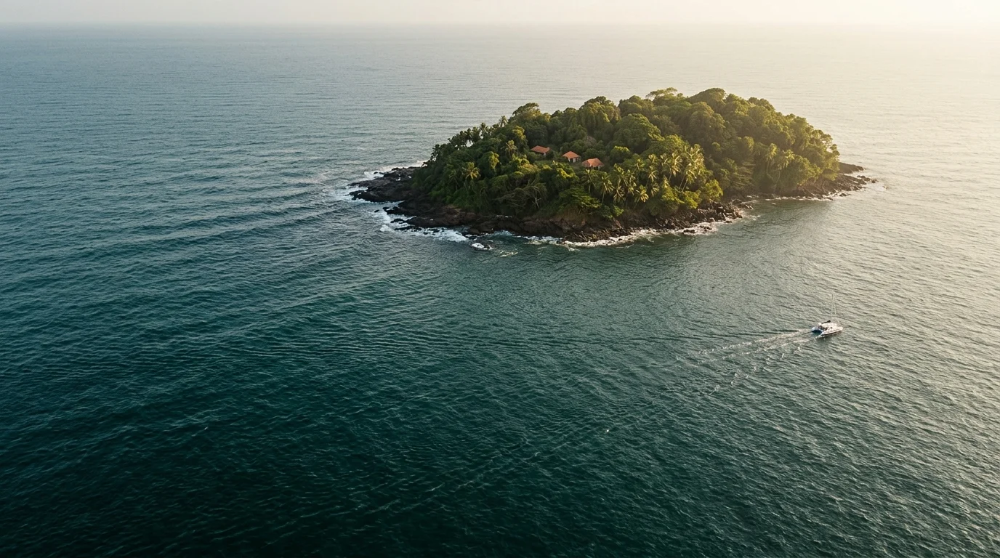
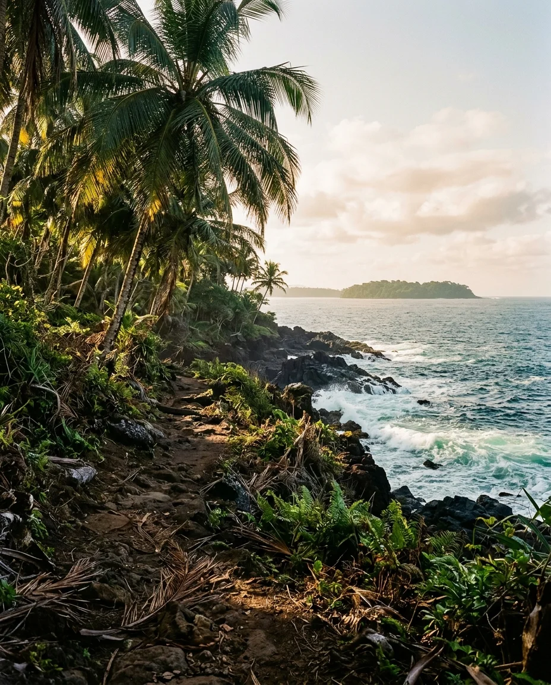
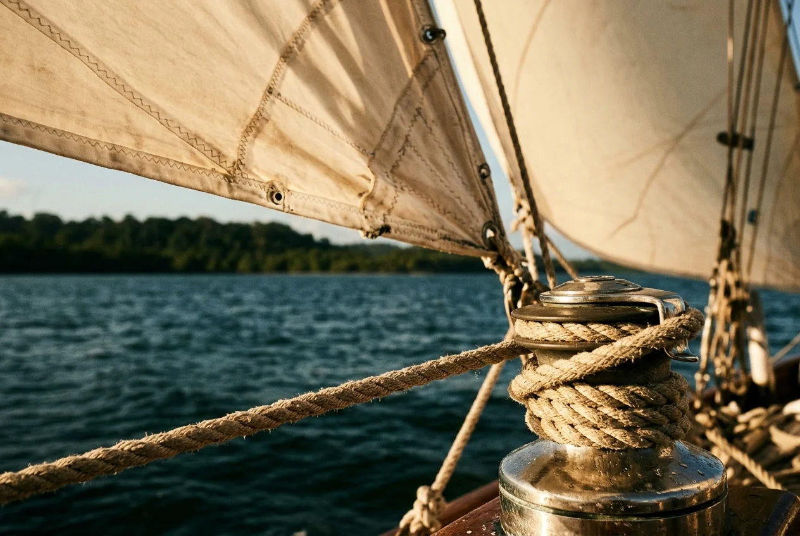

La journée
Royale et Saint-Joseph, du matin au retour au port.
55 € / adulteEnfant 38 €

KOUROU / GUYANE FRANÇAISE
Prenez le large en catamaran avec Tony et Marcel.
Deux escales entre forêt, océan et mémoire du bagne.

LE CARNET DE BORDLA TRAVERSÉE
Du vieux port de Kourou aux sentiers des îles, suivez les escales de votre journée.
Rendez-vous au vieux port. Départ à 8 h avec café, thé et petits gâteaux à bord.
Environ trois heures de visite libre. Prévoyez votre pique-nique ou déjeunez à l’auberge. Selon la mer, le capitaine commente le tour des trois îles.
Retour au bateau pour un départ à 13 h 30. Débarquement en annexe, plage de coquillages et découverte des vestiges du bagne.
Navigation à la voile lorsque le vent le permet. Arrivée prévue vers 17 h 30. L’équipage adapte le programme aux conditions de mer.
LES FORMULES
Royale et Saint-Joseph, du matin au retour au port.
55 € / adulteEnfant 38 €
Un aller et un retour le lendemain. Hébergement à réserver séparément auprès des opérateurs des îles.
82 € / adulteEnfant 55 €
Une journée avec votre groupe pour une fête, une sortie associative ou un séminaire.
1 500 € / journéeProgramme à définir avec Tony
Groupes dès 10 adultes · 50 € par adulte et 35 € par enfant.
Forces armées en Guyane · Journée 50 €/adulte, 35 €/enfant. Deux jours 75 €/adulte, 50 €/enfant. Privatisation 1 350 €.
Chèques-Vacances ANCV Classic et Connect acceptés.

L’ÉQUIPAGE
Tony Hannibal, capitaine guyanais, raconte l’histoire des îles pendant la traversée. À ses côtés, Marcel accueille les passagers et les accompagne du ponton jusqu’aux escales.
INFOS PRATIQUES
Ponton des Pêcheurs, vieux port
Avenue du Général-de-Gaulle, 97310 Kourou